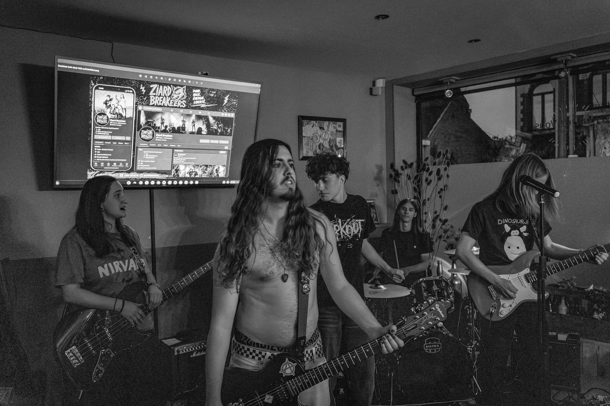

Créé en 2022, Ziard Breakers est un projet Punk Rock aux inspirations métal basé à Lille. Composé de 5 membres âgés de 18 à 20 ans, le groupe se démarque par son énergie live et sa créativité. Après plusieurs changements de line-up, Ziard Breakers travaille aujourd'hui sur la composition d'un EP, avec des morceaux riches en émotion, tout en gardant leur énergie signature.
